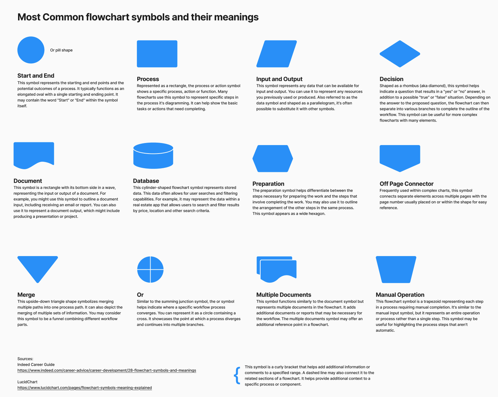

Hello Beautiful People!
Welcome to Spring 2025
This website has additional resources for DES 341, Interactive Media I, DES342 Interactive Media II, DES340, DES140, and DES111
This term I am teaching DES 342 and DES340
I made a chart of flow chart symbols and their meanings. There's also a Figjam version:
A Bit About Me
I'm a Silicon Valley kid, born and raised in San Jose California. I worked at a bunch of large tech companies, design agencies, and start-ups before moving to Portland in 2009 to start a family. I have a 14 year old daughter in High School and two cute but needy dogs. My background is a mix of art, engineering, and design and I’ve always loved to think about how things are made, both digitally and in the “flesh.” I care deeply about user experience design and accessibility. I had a non-traditional education background, I got my bachelors when I was 38 and my masters when I was 45. I’m neurospicy and I love to incorporate multiple learning styles into my classes. This is my very first time teaching this class. I have taught Interactive Media (DES 341 and DES 342) and Interaction Design Principles (DES 340) as well as Foundations in Motion, UX, UI (DES 140). I've been an adjunct at PSU for about 6 years.
If you want to get a jump start on the class here are some things you'll need:
- A Figma account. Sign up for the education deal!
In Fall 2022, Upswell visited my DES140 class to talk about their intersactive kiosk designs. the talk was fascinating and you can watch it on my YouTube channel!


On Wednesday, January 19th, 2022, We invited UX/Product Designer extraordinaire Aimée Reed to have a conversation with PSU design students about all things product design, ux/ui, and coding.
The recorded conversation can be found on my YouTube channel.
About Aimée Reed
Aimée is currently Product Design Lead at Meta/FB in New York, where she leads the design work for their Live Social Audio product, and initially led the design for the News Tab product when first joining the company. Before joining Meta, she was Director of Product Design at PostLight, Head of Design at Quickframe, Senior User Experience Designer at AKQA PDX + NY, and Senior Visual Designer focusing on UX at eRoi.
She's worked on brands like: Mailchimp, Kaiser Permanente, Nike, Verizon, theSkimm, San Francisco Muni, Clif Bar, and NRG.
Aimée founded and created Design Elephants, a quarterly event focused on problematic areas in design.
Before moving to New York, Aimée was the creative director of Ladies Night PDX, a professional group of lady-identifying folks which produces networking and educational events to help empower women, not only in the workplace, but in their everyday lives as well.
Aimée has a BFA in Design and Visual Communications from PNCA, an MA in Art History from SF State, and a BA in Spanish Literature from the University of Oregon.
Aimée's Website: https://www.salutaimeedesign.com/